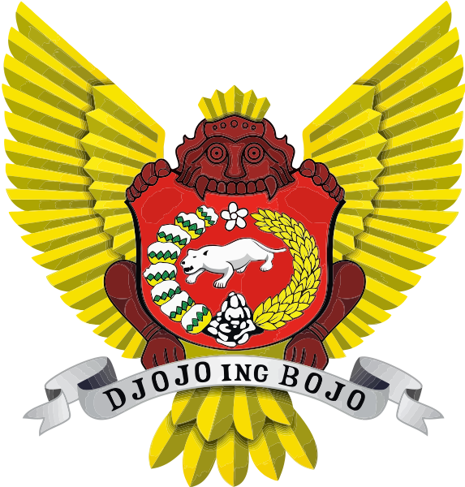

Kediri (City)
image taken from: https://upload.wikimedia.org/wikipedia/commons/thumb/c/c1/Logo_Kota_Kediri_-_Seal_of_Kediri_City.svg/573px-Logo_Kota_Kediri_-_Seal_of_Kediri_City.svg.png
Kediri (Javanese: ꦏꦸꦛꦑꦼꦝꦶꦫꦶ) is an Indonesian city, located near the Brantas River in the province of East Java on the island of Java. It is one of two 'Daerah Tingkat II' that have the name 'Kediri' (The other is the Regency of Kediri).
Archaeological artefacts discovered in 2007 appeared to indicate that the region around Kediri may have been the location of the Kediri Kingdom, a Hindu kingdom in the 11th century.
The city is a major trade centre for the Indonesian sugar and cigarette industry. Kediri is the second largest city by economy in East Java, after Surabaya, with a 2016 estimated GDP at Rp76.95 trillion.
explanation taken from: https://en.wikipedia.org/wiki/Kediri_(city)